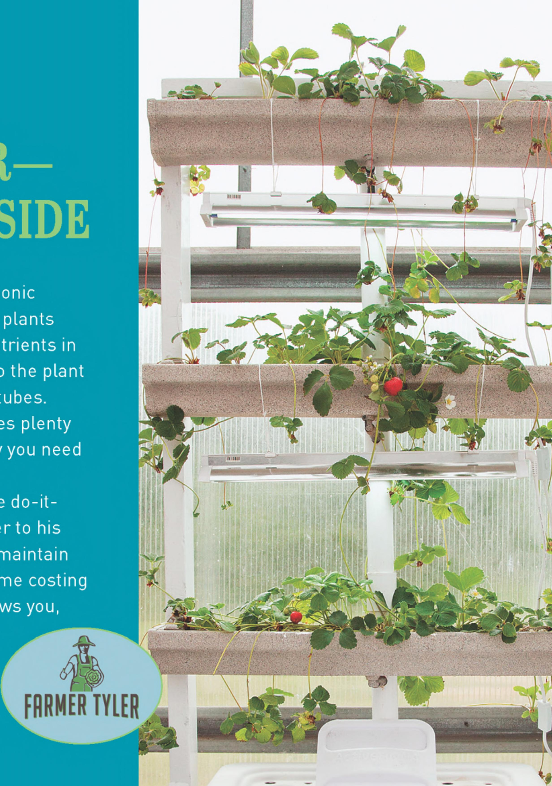

HOW TO GROW PLANTS IN WATER— INDOORS OR OUTSIDE No soil? No sunlight? No problem. A hydroponic growing system gives you the power to grow plants anywhere. Simply suspend your essential nutrients in a water-based solution and circulate them to the plant roots in a contained network of vessels and tubes. Sound easy? In a way, it is. But it also requires plenty of solid information to succeed, which is why you need DIY Hydroponic Gardens. With practical information aimed at home do-ityourselfers, author Tyler Baras (Farmer Tyler to his fans) shows exactly how to build, plant, and maintain over a dozen unique hydroponic systems, some costing just a few dollars to make. Farmer Tyler shows you, with detailed step-by-step photos, precisely how to create these systems, and how to plant and maintain them. All the information you need to get started with your home hydroponic system is included: • RECIPES FOR NUTRIENT SOLUTIONS • LIGHT AND VENTILATION SOURCES • COMPREHENSIVE EQUIPMENT GUIDE GROWING AND MAINTENANCE INSTRUCTIONS • 12+ HYDROPONIC SYSTEM BUILDS • COMPLETE CROP SELECTION CHARTS BONUS: In areas where water is scarce, a hydroponic system is the answer you've been looking for. Hydroponic systems are sealed and do not allow evaporation, making water loss virtually nonexistent. ISBN: 978-0-7603-5759-0 $24.99 US | £16.99 UK | $32.99 CAN Visit QuartoKnows.com Follow us on f G ♦
